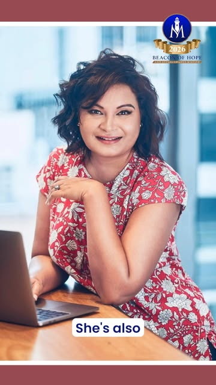

For the mum halfway through chemo, wondering how the school run will happen next term — and the neighbour who quietly does it for her.
People facing cancerOne night of hope — a red-carpet gala honouring changemakers, raising real support for Kiwis facing cancer and for suicide prevention across Aotearoa.
Aotearoa's own figures — from the Cancer Society, Te Aho o Te Kahu and the Coroners Court. They are why this evening exists.
will be diagnosed with cancer in their lifetime. It could be you; it could be someone you love.
Cancer Society of New ZealandKiwis are diagnosed with cancer annually — projected to pass 45,000 a year by 2044.
Te Aho o Te Kahu · State of Cancer in NZ 2025to suspected suicide in the last year alone — a rate that has not improved.
Coroners Court · Health NZ, 2024/25Men account for 75% of New Zealand's suicide deaths — nearly three times the rate of women.
Health NZ · Te Whatu Ora, 2024/25Men aren't struggling less — they're speaking less.
This night exists to change what we're allowed to talk about.
Beacon of Hope stands beside people facing cancer, people fighting silent battles, and the families who love them.
For the mum halfway through chemo, wondering how the school run will happen next term — and the neighbour who quietly does it for her.
People facing cancerFor the mate who went quiet — who laughs the loudest at the barbecue but hasn't answered a text in weeks. This night is about reaching him first.
Silent battlesFor the whānau sitting in hospital corridors and the ones who carry an empty chair at the table — you are not invisible, and you are not alone.
Families & whānauEvery ticket, every nomination, every seat filled tells someone: your story matters — and it isn't over.

Kelly Markey knows what darkness looks like. Born in South Africa during apartheid, she grew up surrounded by injustice — and chose to answer it with words. Today she is a 10× international bestselling author and CEO of the Markey Writing Academy, but her mission has always been closer to home: the people no one else is listening to.
Her acclaimed work on suicide awareness, The Life of Jayandra, was written from inside grief — and won Top Book of the Year in New York, lighting up a Times Square billboard. Readers around the world have written to say the book reached them on their hardest night. That is why she keeps going.
Kelly doesn't keep what her books earn. A global philanthropist and long-term partner of Lifeline Zululand, she gives proceeds back through the Beacon of Hope Mission — to cancer support, to suicide prevention, to families who need practical help now. After New York in 2024 and South Africa in 2025, she brings that promise to Aotearoa.
Auckland won't just host the awards — it hosts a world book launch. Kelly Markey's newest work, the anthology Manifesto of Hope, gathers true stories of survival and courage from around the world, and it will be published from the shores of New Zealand — live, in this room, on this night.
"A declaration that even in the shadows, the human spirit can blaze with light."
Be in the audience when it takes its first breath.
Every ticket funds practical assistance, emotional support and life-changing resources for individuals and families impacted by cancer — in New Zealand and around the world.
Honouring the individuals, organisations and initiatives creating meaningful, measurable impact in the world. See what last year looked like — browse the 2025 Award Magazine →
Keynote storytelling and voices of lived experience — survivors, whānau and advocates who turned grief into action.
Seventeen awards celebrating changemakers — judged on impact, influence, innovation, courage and legacy.
Beacon of Hope is a social enterprise — proceeds are reinvested into cancer support and suicide prevention.
A formal evening carried by the manaakitanga of New Zealand — hope has no borders, but tonight it has a home.
A nurse. A survivor. A mate who kept showing up. Ten award categories are open to public nomination — put their name forward and let them be honoured on a world stage, here at home.
Or stand behind the night itself: sponsorship directly funds support for families facing cancer and suicide-prevention work.
Saturday 29 August 2026, 6:00–11:00 PM at Novotel Auckland Ellerslie, 112 Green Lane East, Auckland. Doors open at 6:00 PM for registration and the red-carpet photo shoot; the opening ceremony begins at 7:00 PM.
Red-carpet arrival and photography, the full Beacon of Hope Awards ceremony, keynote and live performances by Kelly Markey, and the networking reception. Every ticket also funds practical support for individuals and families impacted by cancer.
Formal. It's a red-carpet evening — dress to celebrate the people being honoured.
No — tickets are non-refundable. Proceeds are committed to the mission's cancer-support and suicide-prevention programmes.
Beacon of Hope is a social enterprise. Proceeds provide practical assistance, emotional support and life-changing resources to people impacted by cancer — in New Zealand and globally — and support suicide-prevention initiatives.
Ten of the seventeen award categories are open to public nomination between 1 May and 30 June 2026 (AU$100 per nomination, via the official site). Entries are judged on impact, influence, innovation, courage and legacy, and winners are announced at the Auckland gala.
Novotel Auckland Ellerslie has on-site parking; spaces are limited on event nights, so arriving early or ride-sharing is recommended. Check directly with the venue for current parking rates.
Limited seats. One night. Every ticket changes a story.
Book your seat — $200Talking about cancer and suicide can bring things up. You never have to carry it alone.